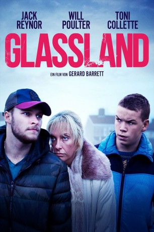

#4847 Glassland
 
 IMDB-Wertung: 6.0 / 10
IMDB-Wertung: 6.0 / 10  Metascore: 0
Metascore: 0 
Der junge Taxifahrer John lebt gemeinsam mit seiner alkoholkranken Mutter Jean in einer Sozialwohnung in Dublin. Er ist bemüht, seine Mutter von der Drogensucht loszubekommen und die Familie wieder zusammenzubringen. Doch Jean macht es ihm nicht gerade leicht und so kommt es nicht selten vor, dass John seine Mutter kaum ansprechbar vorfindet, wenn er von der Arbeit nach Hause kommt. Als Jean erneut wegen einer Überdosis im Krankenhaus landet, will John seine letzte Hoffnung in eine private Entzugsklinik setzen. Um die nötigen finanziellen Mittel für die Institution aufzubringen, sieht er sich jedoch gezwungen, sich mit der Unterwelt der irischen Hauptstadt vertraut zu machen und sich außerhalb der Gesetzesgrenzen zu bewegen.
Jahr: 2014
Dauer: 93 Minuten
FSK: 12
Land: Irland Studio: Lighthouse Home EntertainmentTonspuren: DTS - ,
Untertitel:
Auflösung: 1080p (1920x808) Größe: 5099 MB
Genre: Drama
Regisseur: Gerard Barrett
Drehbuch: Toshiyuki Tsuru
Soundtrack:
Darsteller:
 Toni Collette als Jean
Toni Collette als Jean Will Poulter als Shane
Will Poulter als Shane Jack Reynor als John
Jack Reynor als John Michael Smiley als Jim
Michael Smiley als Jim- Joe Mullins als Taxi Driver
- D.J. McGrath als Paul DVD Clerk
- Gary Ó'Nualláin als Frank
- Ally Ni Chiarain als Woman in Taxi
- Kian Murphy als Bike Kid
- Laura Byrne als Head Nurse
- Shashi Rami als Dr. Shakra
- Darine Ní Dhonnchadha als Bridie
- Graham Earley als Angry Neighbour
- Melissa Maria Carton als Shane's Ex
- Nikki Wong als Girl in Car
- Harry Nagle als Kit
- Jack Barrett als Shane's Son
- John Flynn als Horse Kid
- Tong Zhang als Girl in Car
- Katie Galvin als Cashier
- Alex Oros als Man on Phone
- Ashley Xie als Girl in House
Datei: X:\2014(G-M)\Glassland (2014, FSK12, 1920x808).mkv seit 23.11.2016
Festplatte: HD 2013(I-Z)-2014(A-Z)
 Es gibt insgesamt 136 Filme in der Gruppe '2014(G-M)'
Es gibt insgesamt 136 Filme in der Gruppe '2014(G-M)'